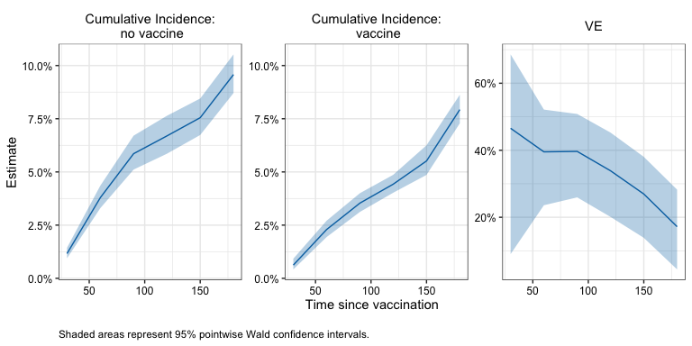

Estimate vaccine effectiveness in observational studies: a matching alternative
Description
The obsve package uses a G-computation style estimator to compute vaccine efficacy from observational vaccine studies. The proposed estimator tends to produce similar point estimates as matching-based estimators but is more efficient.
Installation
You can install the development version of obsve like so:
# TODO: not yet available on Github
# install.packages("devtools")
devtools::install_github("ewu16/obsve")Example
This minimal example shows how to use obsve to obtain cumulative incidence and vaccine effectiveness estimates in a simple simulated data set.
library(obsve)
# Set seed for reproducibility
set.seed(1234)
# ------------------------------------------------------------------------------
# Example data
head(simdata)
#> ID x1 x2 V D_obs Y event
#> 1 1 1 7 1 2 92 0
#> 2 2 0 7 0 NA 210 0
#> 3 3 0 11 1 35 210 0
#> 4 4 0 10 1 6 210 0
#> 5 5 1 11 0 NA 210 0
#> 6 6 1 7 0 NA 90 0
summary(simdata)
#> ID x1 x2 V
#> Min. : 1 Min. :0.0000 Min. : 5.000 Min. :0.0000
#> 1st Qu.: 2501 1st Qu.:0.0000 1st Qu.: 6.000 1st Qu.:0.0000
#> Median : 5000 Median :0.0000 Median : 8.000 Median :0.0000
#> Mean : 5000 Mean :0.4989 Mean : 8.023 Mean :0.4112
#> 3rd Qu.: 7500 3rd Qu.:1.0000 3rd Qu.:10.000 3rd Qu.:1.0000
#> Max. :10000 Max. :1.0000 Max. :11.000 Max. :1.0000
#>
#> D_obs Y event
#> Min. : 1.00 Min. : 1 Min. :0.0000
#> 1st Qu.: 11.00 1st Qu.:174 1st Qu.:0.0000
#> Median : 18.00 Median :210 Median :0.0000
#> Mean : 25.78 Mean :178 Mean :0.1007
#> 3rd Qu.: 32.00 3rd Qu.:210 3rd Qu.:0.0000
#> Max. :206.00 Max. :210 Max. :1.0000
#> NA's :5888
# ------------------------------------------------------------------------------
# 1. Set input parameters
outcome_name <- "Y"
event_name <- "event"
trt_name <- "V"
time_name <- "D_obs"
adjust_vars <- c("x1", "x2")
times <- seq(30, 180, by = 30)
censor_time <- max(times)
tau <- 14
ci_type <- "wald"
limit_type <- "fixed"
n_boot <- 10
alpha <- .05
# ------------------------------------------------------------------------------
# 2. Compute VE estimand at time points
fit1 <- obsve(data = simdata,
outcome_name = outcome_name,
event_name = event_name,
trt_name = trt_name,
time_name = time_name,
adjust_vars = adjust_vars,
marginalizing_dist = "observed",
times = times,
censor_time = censor_time,
tau = tau,
ci_type = ci_type,
limit_type = limit_type,
n_boot = n_boot,
alpha = alpha)
#> Bootstrapping...
#> Time difference of 1.118621 secs
fit1$estimates
#> $risk_0
#> estimate wald_lower wald_upper wald_sd wald_n boot_sd
#> 30 0.01163891 0.009434071 0.01435158 0.10829521 10 0.001216964
#> 60 0.03790915 0.032953093 0.04357699 0.07410618 10 0.002638276
#> 90 0.05857293 0.051160294 0.06698377 0.07303806 10 0.004023603
#> 120 0.06691947 0.058631123 0.07628454 0.07197471 10 0.004524174
#> 150 0.07548793 0.067469021 0.08437368 0.06170547 10 0.004344667
#> 180 0.09576440 0.087153441 0.10512816 0.05290843 10 0.004634959
#>
#> $risk_1
#> estimate wald_lower wald_upper wald_sd wald_n boot_sd
#> 30 0.006219935 0.004194176 0.009215067 0.20209496 10 0.001340820
#> 60 0.022925618 0.019349244 0.027144726 0.08839716 10 0.002090615
#> 90 0.035346676 0.031133277 0.040106687 0.06698357 10 0.002344481
#> 120 0.044244807 0.040189590 0.048688447 0.05120705 10 0.002257466
#> 150 0.055146409 0.048723349 0.062360696 0.06663807 10 0.003561935
#> 180 0.079293545 0.072961782 0.086123742 0.04595721 10 0.003451767
#>
#> $ve
#> estimate wald_lower wald_upper wald_sd wald_n boot_sd
#> 30 0.4655914 0.09048845 0.6859935 0.27130449 10 0.16982429
#> 60 0.3952484 0.23517000 0.5218225 0.11981637 10 0.07714911
#> 90 0.3965357 0.25796763 0.5092273 0.10546415 10 0.06403802
#> 120 0.3388351 0.20073908 0.4530709 0.09677939 10 0.06537961
#> 150 0.2694672 0.13936256 0.3799036 0.08362356 10 0.06125330
#> 180 0.1719935 0.04529772 0.2818759 0.07264346 10 0.06007380
#Compute simultaneous CI
simul_ci <- simultaneous_ci(fit1, alpha, seed = 1234)
simul_ci$estimates
#> $risk_0
#> simul_lower simul_upper simul_n
#> 30 0.009165215 0.01477031 10
#> 60 0.032322595 0.04441695 10
#> 90 0.050213244 0.06822440 10
#> 120 0.057569711 0.07766257 10
#> 150 0.066430295 0.08566723 10
#> 180 0.086025769 0.10647707 10
#>
#> $risk_1
#> simul_lower simul_upper simul_n
#> 30 0.003768339 0.01025007 10
#> 60 0.018476983 0.02841433 10
#> 90 0.030076385 0.04150096 10
#> 120 0.039152037 0.04996558 10
#> 150 0.047106597 0.06446557 10
#> 180 0.071325611 0.08806718 10
#>
#> $ve
#> simul_lower simul_upper simul_n
#> 30 -0.01154813 0.7176679 10
#> 60 0.19839821 0.5437579 10
#> 90 0.22665417 0.5290992 10
#> 120 0.16984105 0.4734273 10
#> 150 0.11068897 0.3998970 10
#> 180 0.01772634 0.3020329 10
#Make nice dataframes of results
estimates_df <- estimates_to_df(fit1$estimates)
simul_df <- estimates_to_df(simul_ci$estimates)
result_df <- merge(estimates_df, simul_df, all.x = TRUE, sort = FALSE)
head(result_df)
#> t0 term estimate wald_lower wald_upper wald_sd wald_n boot_sd
#> 1 30 risk_0 0.011638913 0.009434071 0.014351585 0.10829521 10 0.001216964
#> 2 30 risk_1 0.006219935 0.004194176 0.009215067 0.20209496 10 0.001340820
#> 3 30 ve 0.465591420 0.090488451 0.685993509 0.27130449 10 0.169824288
#> 4 60 risk_0 0.037909148 0.032953093 0.043576991 0.07410618 10 0.002638276
#> 5 60 risk_1 0.022925618 0.019349244 0.027144726 0.08839716 10 0.002090615
#> 6 60 ve 0.395248394 0.235170003 0.521822487 0.11981637 10 0.077149107
#> simul_lower simul_upper simul_n
#> 1 0.009165215 0.01477031 10
#> 2 0.003768339 0.01025007 10
#> 3 -0.011548133 0.71766788 10
#> 4 0.032322595 0.04441695 10
#> 5 0.018476983 0.02841433 10
#> 6 0.198398207 0.54375787 10
#Plot simultaneous confidence bands
plot_ve_panel(result_df, ci_type = "simul") 
# ------------------------------------------------------------------------------
# 3. Compare results with matching estimator
id_name <- "ID"
matching_vars <- adjust_vars
matched_cohort <- match_rolling_cohort(data = simdata,
outcome_name = outcome_name,
trt_name = trt_name,
time_name = time_name,
id_name = id_name,
matching_vars = adjust_vars,
replace = FALSE,
seed = 5678)
matched_data <- matched_cohort[[1]]
fit_matching <-matching_ve(matched_data = matched_data,
outcome_name = outcome_name,
event_name = event_name,
trt_name = trt_name,
time_name = time_name,
method = "cox",
adjust = adjust_vars,
times = times,
censor_time = censor_time,
tau = tau,
pair_censoring = TRUE,
separate = TRUE,
ci_type = ci_type,
limit_type = limit_type,
data = simdata,
id_name = id_name,
matching_vars = matching_vars,
replace = FALSE,
n_boot = n_boot,
alpha = alpha)
#> Bootstrapping...
#> Time difference of 1.479839 secs
## Proposed and matching based estimators have similar point estimates
## Proposed has narrower confidence intervals
fit1$estimates
#> $risk_0
#> estimate wald_lower wald_upper wald_sd wald_n boot_sd
#> 30 0.01163891 0.009434071 0.01435158 0.10829521 10 0.001216964
#> 60 0.03790915 0.032953093 0.04357699 0.07410618 10 0.002638276
#> 90 0.05857293 0.051160294 0.06698377 0.07303806 10 0.004023603
#> 120 0.06691947 0.058631123 0.07628454 0.07197471 10 0.004524174
#> 150 0.07548793 0.067469021 0.08437368 0.06170547 10 0.004344667
#> 180 0.09576440 0.087153441 0.10512816 0.05290843 10 0.004634959
#>
#> $risk_1
#> estimate wald_lower wald_upper wald_sd wald_n boot_sd
#> 30 0.006219935 0.004194176 0.009215067 0.20209496 10 0.001340820
#> 60 0.022925618 0.019349244 0.027144726 0.08839716 10 0.002090615
#> 90 0.035346676 0.031133277 0.040106687 0.06698357 10 0.002344481
#> 120 0.044244807 0.040189590 0.048688447 0.05120705 10 0.002257466
#> 150 0.055146409 0.048723349 0.062360696 0.06663807 10 0.003561935
#> 180 0.079293545 0.072961782 0.086123742 0.04595721 10 0.003451767
#>
#> $ve
#> estimate wald_lower wald_upper wald_sd wald_n boot_sd
#> 30 0.4655914 0.09048845 0.6859935 0.27130449 10 0.16982429
#> 60 0.3952484 0.23517000 0.5218225 0.11981637 10 0.07714911
#> 90 0.3965357 0.25796763 0.5092273 0.10546415 10 0.06403802
#> 120 0.3388351 0.20073908 0.4530709 0.09677939 10 0.06537961
#> 150 0.2694672 0.13936256 0.3799036 0.08362356 10 0.06125330
#> 180 0.1719935 0.04529772 0.2818759 0.07264346 10 0.06007380
fit_matching$estimates
#> $risk_0
#> estimate wald_lower wald_upper wald_sd wald_n boot_sd
#> 30 0.01086433 0.00815648 0.01445805 0.14765884 10 0.001507189
#> 60 0.04053508 0.03350081 0.04897153 0.10097276 10 0.003924289
#> 90 0.05649753 0.04652049 0.06846067 0.10450349 10 0.005491971
#> 120 0.06531078 0.05476062 0.07772640 0.09561912 10 0.005881248
#> 150 0.07505713 0.06528075 0.08616266 0.07656603 10 0.005372431
#> 180 0.09806306 0.08844019 0.10860822 0.05811174 10 0.005244571
#>
#> $risk_1
#> estimate wald_lower wald_upper wald_sd wald_n boot_sd
#> 30 0.005404227 0.002909659 0.01001601 0.31717449 10 0.001360424
#> 60 0.020934645 0.017843672 0.02454767 0.08311817 10 0.001668298
#> 90 0.034496693 0.027292778 0.04351701 0.12330580 10 0.003871580
#> 120 0.043804930 0.037448874 0.05118241 0.08336632 10 0.003323300
#> 150 0.053254910 0.047982114 0.05907118 0.05602941 10 0.002757195
#> 180 0.075998047 0.065721451 0.08773066 0.07976815 10 0.005442743
#>
#> $ve
#> estimate wald_lower wald_upper wald_sd wald_n boot_sd
#> 30 0.5025715 -0.13692217 0.7823641 0.4217569 10 0.19441696
#> 60 0.4835425 0.28522937 0.6268337 0.1658034 10 0.08798692
#> 90 0.3894124 0.09528104 0.5879193 0.2006172 10 0.12109698
#> 120 0.3292849 0.09653917 0.5020716 0.1519866 10 0.09736560
#> 150 0.2904750 0.11654438 0.4301630 0.1118619 10 0.07610239
#> 180 0.2250084 0.02436008 0.3843918 0.1174723 10 0.08596516